|
|
Computer Add-Ons |
|
|
|
||
| Smartphone Applications | |||
|---|---|---|---|
|
|||
| Icons | |||
|
Set #1 by Todd Witek (includes images originally by John Berry): 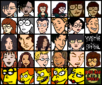 dicons.zip (29,900 bytes) Set #2 by Jason Cabral: dwinicos.zip (50,684 bytes) Set #3 by Jessica: The Fashion Club - Too many to show here! fcicons.zip (189,308 bytes) |
|||
| Plus! Themes | |||
|
Intended for Windows 95 with the Plus! Pack installed, these themes
include icons, background bitmaps, and sounds. Note that these themes
have not been tested with Windows 98, but they should work just fine. Daria_Theme.zip (2,210,226 bytes) Theme #2 by Emma Russell DariaTheme2.zip (376,156 bytes) Theme #3 by Crazy Nutso (Based on episode #307, "Daria!") dtm.zip (1,536,949 bytes) |
|||
| Wallpaper | |||
|
Images of Trent 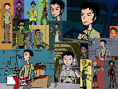 640x480 (159,073 bytes) 800x600 (235,779 bytes) |
Brittany Quotes 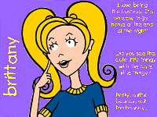 640x480 (63,576 bytes) 800x600 (85,142 bytes) |
||
|
Daria is Quinn 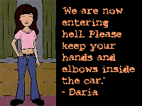 640x480 (91,288 bytes) 800x600 (133,698 bytes) |
Daria Alter-Egos (by jBONE) 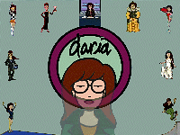 640x480 (193,290 bytes) 800x600 (265,340 bytes) |
Sick, Sad World 640x480 (161,332 bytes) 800x600 (206,951 bytes) |
Daria (by Arsenic) 640x480 (176,147 bytes) 800x600 (257,247 bytes) 1024x768 (418,508 bytes) |
| TrueType Font | |||
|
The TrueType font available below is called "Stereo Hi-Fi." It has
become quite popular with Daria web site creators due to its
striking similarity to the brush script lettering used in the
Daria logo. |
|||
| WinAmp Skins | |||
|
These skins are for use with WinAmp, the popular multimedia player for Windows 95/98/NT. All of the skins are compatible with WinAmp 1.0 and later, while several skins are enhanced for use with WinAmp 2.0. (Thanks to Katherine Goodman for her recommendation.) DariaAmp.zip (35,716 bytes) 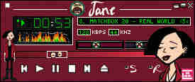 JaneAmp.zip (37,001 bytes) 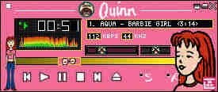 QuinnAmp.zip (28,108 bytes) 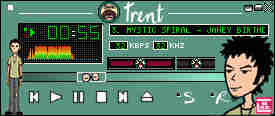 TrentAmp.zip (35,895 bytes) 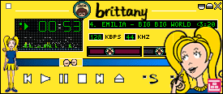 BrittanyAmp.zip (21,265 bytes) 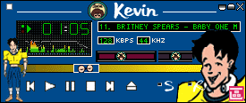 KevinAmp.zip (19,624 bytes)
The following skins were created by Jessi L. Bencloski (requires WinAmp 2.0). dariaamp2.zip (63,935 bytes) 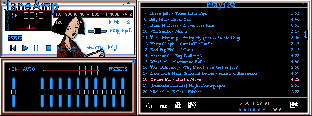 janeamp2.zip (155,166 bytes) 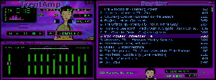 trentamp2.zip (67,524 bytes) |
|||